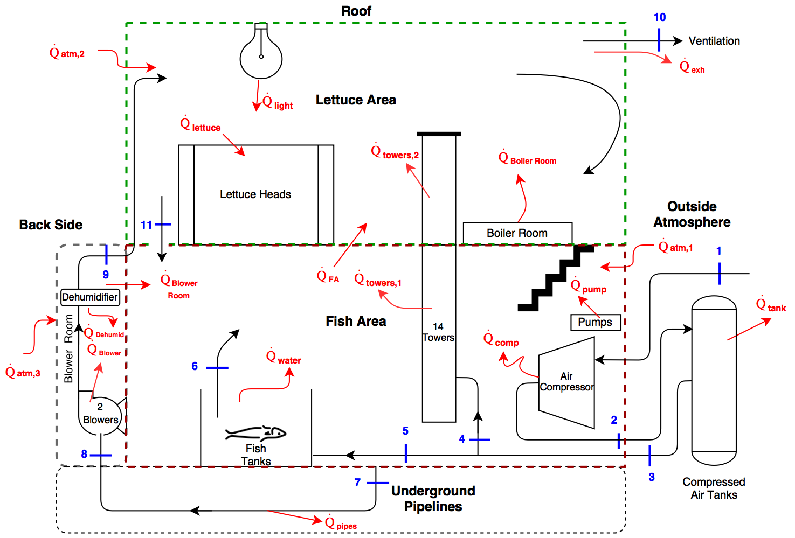
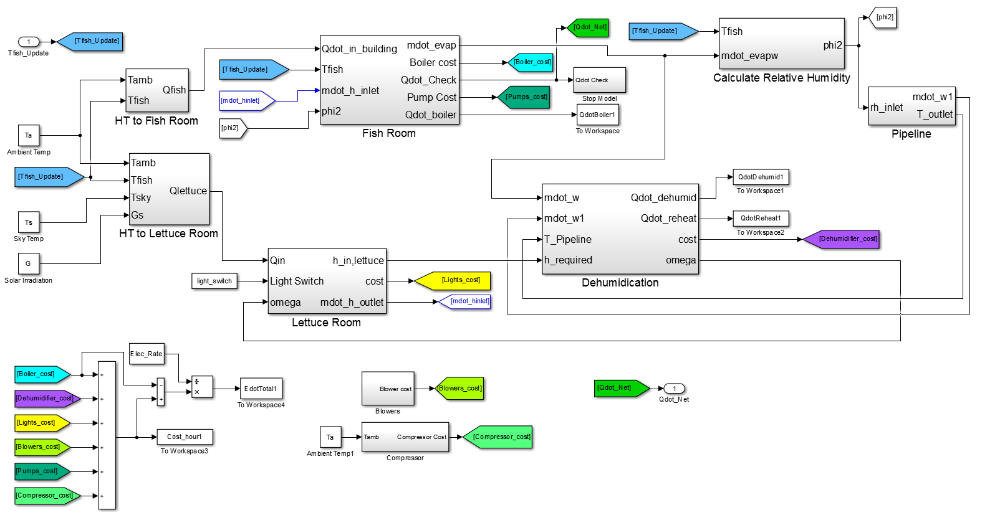

Technical Skills Used
How it Works
The project was split into the following 3 parts. For more info, please see our conference style report. Don't worry, it's not that long.
- Characterizing the baseline energy usage of the facility. This included modeling the energy flows (A diagram created by my teammate, Pawan Pawar, is shown below) of the following components. (Note, boldface type are areas I worked on. Italic type are areas I contributed to.)
- Boiler
- Growth Lights
- Blowers and Underground Pipelines
- Pumps
- Compressor
- Building Heat Transfer
- Dehumidification System

- Conduct feasibility studies on potential design alternatives such as the effect of integrating different kinds of renewable energy technologies. The technologies researched are shown below: (Note, boldface type are areas I worked on.)
- Solar Thermal System
- Combined Heat and Power
- Wind
- Solar PV
- Electrolysis
- Creating a system model that will estimate the amount of electricity and natrual gas required to maintain the desired space conditions for the facility. I played a big role in putting together the Simulink Model for this. The model is shown below.

The system model also provided the total energy use for each component, the utility costs, and allowed us to calculate the CO2 emissions per pound of fish plus one head of lettuce which can be seen in the conference report. It also allowed us to calculate and characterize how hard a dehumificaiton system would need to work to meet the system demands.
Results
The total monthly cost and energy usage for each component is shown below. For more results, including seeing what an hourly heating/cooling load looks like during a given day of the year, please see our report.